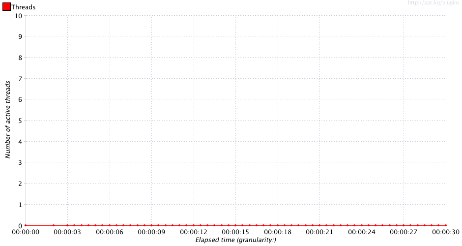
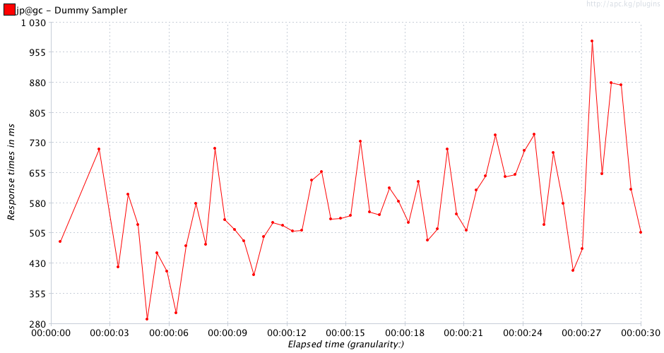
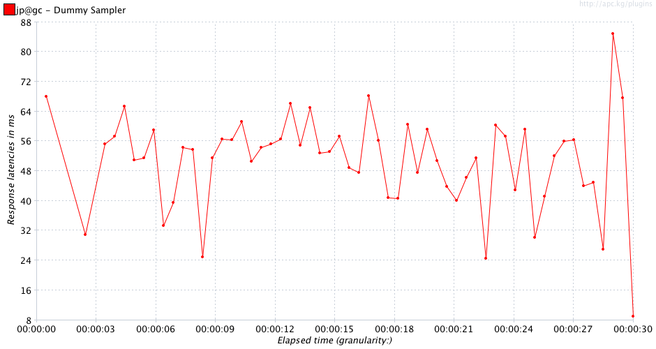
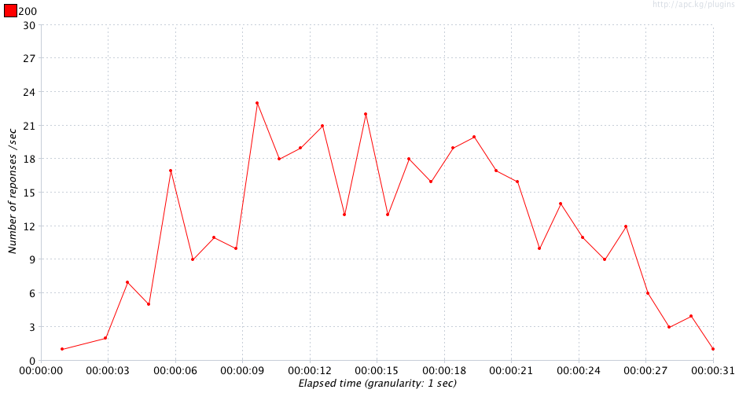
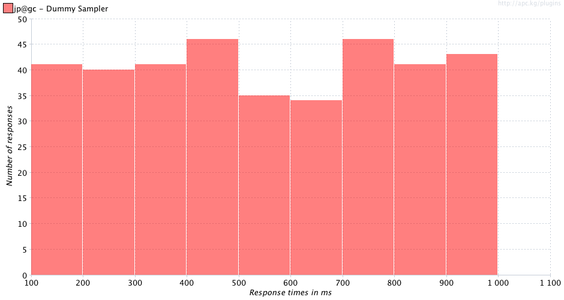
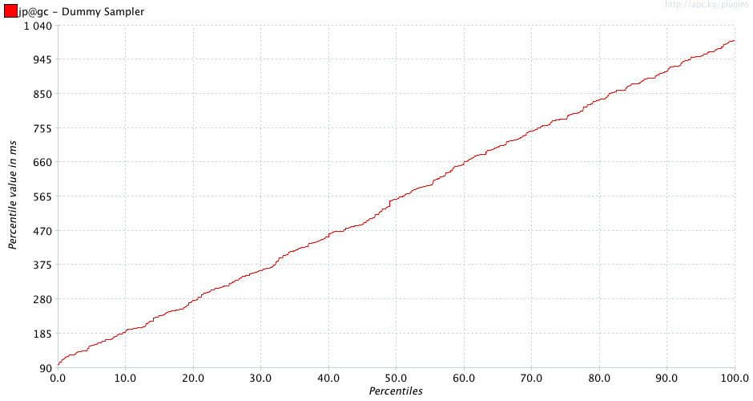

sample_nominal_20121119_190629.jtlResult Table:
| Page | Requests | AVG | Median | Standard Deviation | % Deviation | Minimum | 90% | Maximum | Throughput / sec | % error | % < 500ms | % < 2s | % < 4s | % < 6s | % < 8s |
|---|---|---|---|---|---|---|---|---|---|---|---|---|---|---|---|
| jp@gc - Dummy Sampler | 367 | 554 | 559 | 264 | 26.44 | 101 | 913 | 999 | 12.04 | 0.00 | 45.7 | 99.9 | 99.9 | 99.9 | 99.9 |
| TOTAL | 367 | 554 | 559 | 264 | 26.44 | 101 | 913 | 999 | 12.04 | 0.00 | 45.7 | 99.9 | 99.9 | 99.9 | 99.9 |






Issues:
| Issue | Label | Item | Expected | Real |
|---|---|---|---|---|
| 1 | jp@gc - Dummy Sampler | Number of samplers | 400 | 367 |
| 2 | jp@gc - Dummy Sampler | % Deviation | 10 | 26.440791643731625 |
| 3 | TOTAL | Number of samplers | 400 | 367 |
| 4 | TOTAL | % Deviation | 10 | 26.440791643731625 |